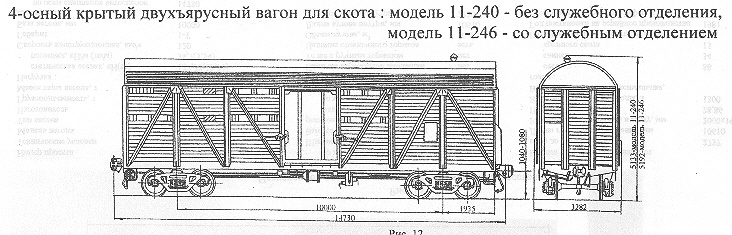

Назначение: для перевозки живности на дальные расстояния
Параметры модели 11-240
| Номер проекта | 240.00.002 |
| Технические условия | ТУ24-5.329-78 |
| Модель вагона | 11-240 |
| Тип вагона | 964 |
| Изготовитель | АВЗ |
| Грузоподъемность, т | 26,46 |
| Масса тары вагона, т | 25,4 |
| Нагрузка: статическая осевая, кН(тс) |
129,65(13,23) |
| погонная, кН/м(тс/м) | 37,39(3,82) |
| Скорость конструкционная, км/ч | 120 |
| Габарит | 1-Т |
| База вагона, мм | 10000 |
| Длина, мм: по осям сцепления автосцепок |
14730 |
| по концевым балкам рамы (длина рамы) | 13870 |
| Ширина максимальная, мм | 3282 |
| Высота от уровня верха головок рельсов, мм: максимальная |
5133 |
| Количество осей, шт. | 4 |
| Модель 2-осной тележки | 18-100 |
| Наличие переходной площадки | нет |
| Тоже с ручным тормозом | нет |
| Наличие стояночного тормоза | есть |
| Объем кузова, м³ | 109 |
| Длина кузова внутри, мм | 10588 |
| Ширина кузова внутри, мм | 2760 |
| Высота грузового помещения от пола до потолка,мм:nbsp; 1-го яруса |
1800 |
| 2-го яруса | 3138 |
| Размеры дверного проема в свету, мм | 2000х2577 |
| Площадь пола,м² | 38 |
| Вместимость баков для воды, л | 1300 |
| Вместимость вагона максимальная, голов: овец |
220 |
| свиней | 82 |
| Вместимость при комбинированной перевозке, шт. на верхне ярусе: овец |
110 |
| свиней | 40 |
| на нижнем ярусе крупный рогатый скот | 20 |
| Наличие отделения для проводника | нет |
| Год постановки на серийное производство или закупки вагона | 1975 |
| Возможность установки буферов | нет |
Параметры модели 11-246
| Номер проекта | 246.00.002 |
| Технические условия | ТУ24-5.329-78 |
| Модель вагона | 11-246 |
| Тип вагона | 964 |
| Изготовитель | АВЗ |
| Грузоподъемность, т | 27,23 |
| Масса тары вагона, т | 27,5 |
| Нагрузка: статическая осевая, кН(тс) |
133,43(13,62) |
| погонная, кН/м(тс/м) | 38,33(3,91) |
| Скорость конструкционная, км/ч | 120 |
| Габарит | 1-Т |
| База вагона, мм | 10000 |
| Длина, мм: по осям сцепления автосцепок |
14730 |
| по концевым балкам рамы (длина рамы) | 13870 |
| Ширина максимальная, мм | 3282 |
| Высота от уровня верха головок рельсов, мм: максимальная |
5192 |
| Количество осей, шт. | 4 |
| Модель 2-осной тележки | 18-100 |
| Наличие переходной площадки | нет |
| Тоже с ручным тормозом | нет |
| Наличие стояночного тормоза | есть |
| Объем кузова, м³ | 109 |
| Длина кузова внутри, мм | 10588 |
| Ширина кузова внутри, мм | 2760 |
| Высота грузового помещения от пола до потолка,мм:nbsp; 1-го яруса |
1800 |
| 2-го яруса | 3138 |
| Размеры дверного проема в свету, мм | 2000х2577 |
| Площадь пола,м² | 29 |
| Вместимость баков для воды, л | 1300 |
| Вместимость вагона максимальная, голов: овец |
168 |
| свиней | 64 |
| Вместимость при комбинированной перевозке, шт. на верхне ярусе: овец |
80 |
| свиней | 30 |
| на нижнем ярусе крупный рогатый скот | 15 |
| Наличие отделения для проводника | есть |
| Год постановки на серийное производство или закупки вагона | 1975 |
| Возможность установки буферов | нет |